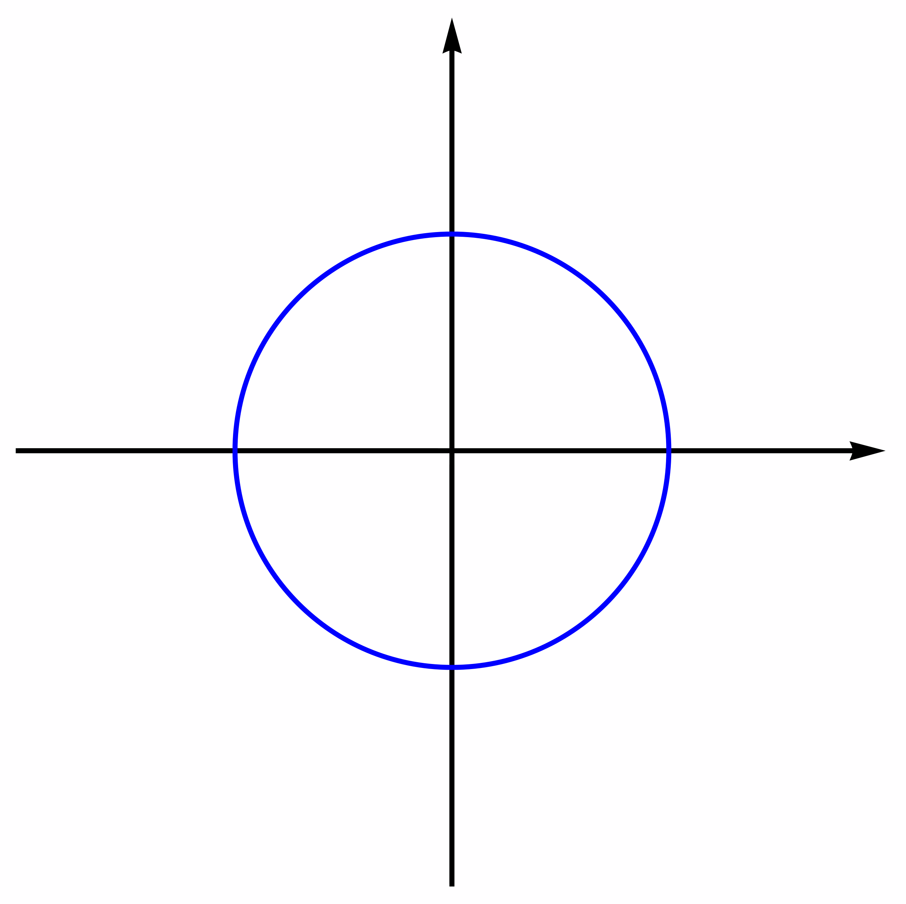
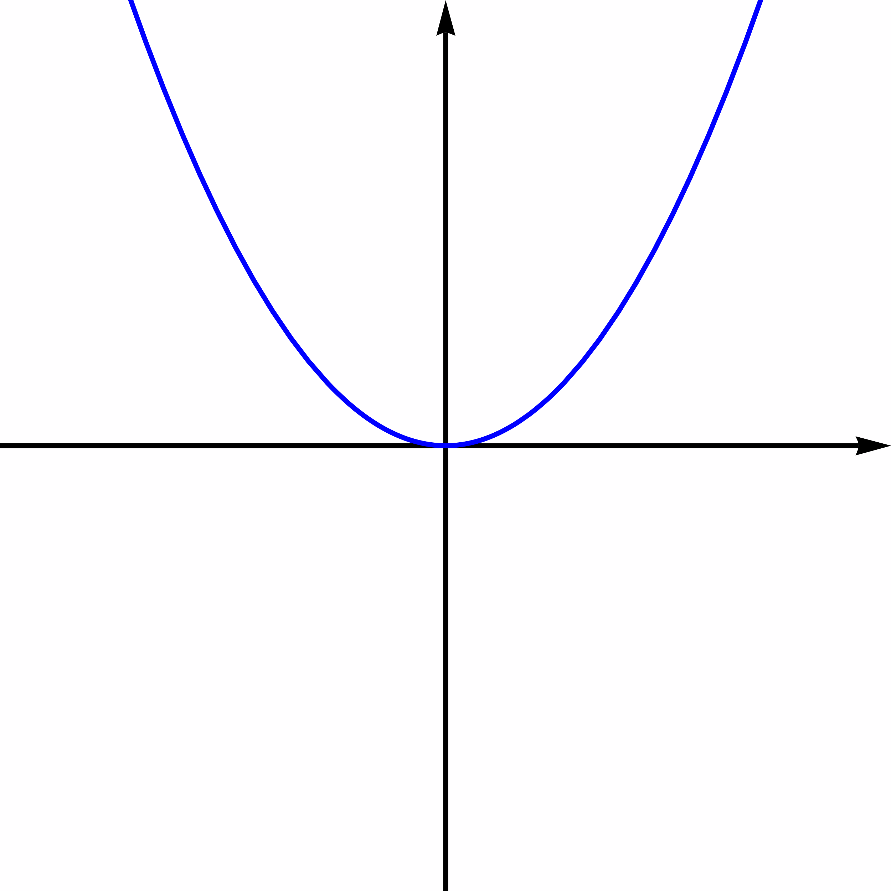
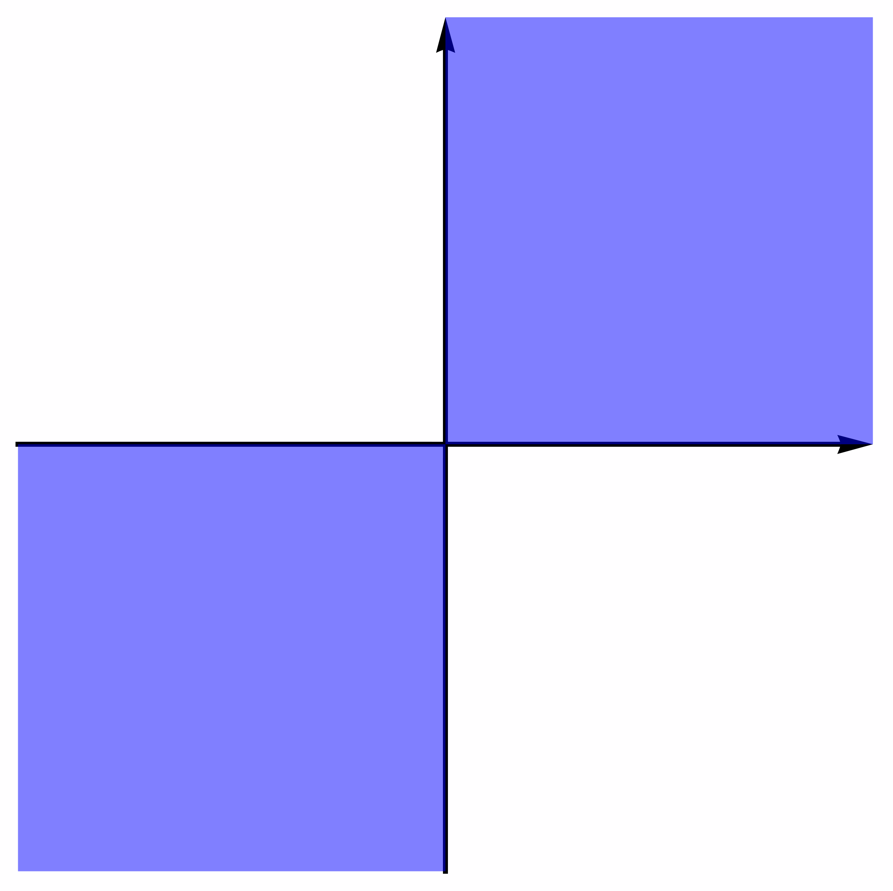

Chapter 5: The Vector Space $\RR^n$
5.1 Subspaces and Spanning
This chapter is meant to bridge the gap between the more computational aspects of matrix algebra with the abstract theory of vector spaces. More precisely, we will start the study of the key concepts concerning vector spaces, but only in the particular case of $\RR^n$. Later on we will discuss the case of general vector spaces.
Subspaces of $\RR^n$
From now on, we will be working with sets, and more particularly, with subsets of $\RR^n$. We first recall the basic ideas and notations from set theory:
- A set is a collection of objects, known as its elements. If $S$ is a set and $a$ is an element, then the notation $a\in S$ means that $a$ is an element of $S$.
-
Two sets $S,\,T$ are equal if they have the same elements (that is, if for any element $a$ we have $a\in S$ if and only if
$s\in T$). - More generally, if $S,\,T$ are sets, then we say that $S$ is a subset of $T$ (and we write $S\subseteq T$) if every element of $S$ is also an element of $T$. More precisely, $S\subseteq T$ if $a\in S$ implies $a\in T$.
- If $S$ and $T$ are sets, then $S=T$ if and only if $S\subseteq T$ and $T\subseteq S$.
- There exists a set that has no elements, and it is denoted by $\varnothing$. It is called the empty set.
- $\bf{0}\in U$.
- If $\bf{x}\in U$ and $\bf{y}\in U$, then $\bf{x}+\bf{y}\in U$ (we say that $U$ is closed under addition).
- If $\bf{x}\in U$ and $a\in \RR$, then $a\bf{x}\in U$ (we say that $U$ is closed under scalar multiplication).
The two simplest examples of vector subspaces of $\RR^n$ are the zero subspace $\{ \bf{0} \} $ and the whole $\RR^n$. Any subspace $U$ of $\RR^n$ that is different from $\RR^n$ and $\{\bf{0}\}$ is called a proper subspace.
For example, given an $m\times n$ matrix $A$, we can construct a subspace of $\RR^n$ and a subspace of $\RR^m$, both associated with $A$.
Proof.
First we prove that $\null(A)$ is a subspace of $\RR^n$. By definition, $\null(A)\subseteq \RR^n$. Moreover, $\bf{0}\in U$ because $A\bf{0}=\bf{0}$. Now, let $\bf{x}_1,\,\bf{x}_2\in \null(A)$ be two arbitrary vectors and $a\in \RR$ be any real number. We have \[ A(\bf{x}_1 + \bf{x}_2)=A\bf{x}_1 + A\bf{x}_2 = \bf{0}+\bf{0}=\bf{0}, \qquad A(a\bf{x})=aA\bf{x}_1=a\bf{0}=\bf{0}. \] Therefore, $\bf{x}_1+\bf{x}_2\in \null(A)$ and $a\bf{x}_1\in \null(A)$. Thus, $\null(A)$ satisfies the three defining conditions of a subspace, so $\null(A)$ is a subspace of $\RR^n$.
We now prove that $\im(A)$ is a subspace of $\RR^m$.
Again, we have by definition that $\im(A)\subseteq \RR^m$.
In addition, $\im(A)$ contains the zero vector because $\bf{0}=A\bf{0}\in \im(A)$.
Take any two vectors $\bf{y}_1,\,\bf{y}_2\in \im(A)$ and any scalar $a\in \RR$.
Since both $\bf{y}_1$ and $\bf{y}_2$ are in $\im(A)$, we can find vectors $\bf{x}_1$ and $\bf{x}_2$ in $\RR^n$ such that $\bf{y}_1=A\bf{x}_1$ and $\bf{y}_2=A\bf{x}_2$.
As a consequence,
\[
\bf{y}_1+\bf{y}_2
=
A\bf{x}_1 + A\bf{x}_2
=
A(\bf{x}_1+\bf{x}_2),
\qquad
a\bf{y}_1
=
a(A\bf{x}_1)
=
A(a\bf{x}_1)
\]
are both in $\im(A)$.
We conclude that $\im(A)$ is also a subspace because it satisfies the defining conditions.
Using a similar argument, one can show that a plane $\pi\subseteq \RR^3$ that contains the origin is a vector subspace of $\RR^3$.

$\{ (x,y)\in\RR^2 \mid x^2 + y^2 = 1 \} $

$\{ (x,y)\in\RR^2 \mid y=x^2 \} $

$\{ (x,y)\in\RR^2 \mid xy\geq 0 \} $
Spanning sets
Recall that, when studying the solutions to a homogeneous linear system $A\bf{x}=\bf{0}$, we were interested in finding a family of solutions, called basic solutions, such that every solution to $A\bf{x}=\bf{0}$ is a linear combination of basic solutions. This meant that we could use a handful of solutions to $A\bf{x}=\bf{0}$ to describe all the possible solutions to this system. We now follow a similar approximation for subspaces: given a subspace $U\subseteq \RR^n$, can we find a collection of vectors $\bf{x}_1,\,\bf{x}_2,\,\dots,\,\bf{x}_k\in U$ such that every vector in $U$ is a linear combination of $\bf{x}_1,\,\bf{x}_2,\,\dots,\,\bf{x}_k$?
- Is $\bf{u}=(0,0,7)$ in $\vecspan\{\bf{x},\bf{y}\}$?
- Is $\bf{v}=(-11,6,-6)$ in $\vecspan\{\bf{x},\bf{y}\}$?
Solution.
The vector $\bf{u}$ is in $\vecspan \{ \bf{x},\bf{y} \} $ if and only if it is a linear combination of $\bf{x}$ and $\bf{y}$. This is the same as saying that there exist constants $a_1,\,a_2\in \RR$ such that \[ \bf{u}=a_1 \bf{x} + a_2 \bf{y} \iff \begin{bmatrix} 0 \\ 0 \\ 7 \end{bmatrix} = a_1 \begin{bmatrix} 3 \\ 2\\ 3 \end{bmatrix} + a_2 \begin{bmatrix} -1 \\ 2 \\ 0 \end{bmatrix} = \begin{bmatrix} 3 & -1 \\ 2 & 2 \\ 3 & 0 \end{bmatrix} \begin{bmatrix} a_1 \\ a_2 \end{bmatrix}. \] In other words, $\bf{u}\in \vecspan{\bf{x},\bf{y}}$ if and only if the linear system \[ \begin{bmatrix} 3 & -1 \\ 2 & 2 \\ 3 & 0 \end{bmatrix} \begin{bmatrix} a_1 \\ a_2 \end{bmatrix} = \begin{bmatrix} 0 \\ 0 \\ 7 \end{bmatrix} \] is consistent. However, the Gaussian algorithm readily shows that this system is inconsistent, so $\bf{u}$ does not belong to $\vecspan \{ \bf{x},\bf{y} \} $.
Arguing as with $\bf{u}$, we see that $\bf{v}\in \vecspan \{ \bf{x},\bf{y} \} $ if and only if the linear system \[ \begin{bmatrix} 3 & -1 \\ 2 & 2 \\ 3 & 0 \end{bmatrix} \begin{bmatrix} a_1 \\ a_2 \end{bmatrix} = \begin{bmatrix} -11 \\ 6 \\ -6 \end{bmatrix} \] is consistent. In this case, Gaussian elimination yields that this system has a unique solution: $a_1=-2$ and $a_2=5$. Therefore, we obtain that $\bf{v}=-2\bf{x}+5\bf{y}$, so $\bf{v}\in \vecspan \{ \bf{x},\bf{y} \} $.
- $U=\im(\begin{bmatrix}\bf{x}_1 & \bf{x}_2 & \cdots & \bf{x}_k\end{bmatrix})$, so $U$ is a vector subspace of $\RR^n$.
- If $V\subseteq \RR^n$ is a vector subspace of $\RR^n$ and $\bf{x}_1,\,\bf{x}_2,\,\dots,\,\bf{x}_k\in V$, then $U\subseteq V$.
Proof.
Let us prove the first assertion. Suppose $A=\begin{bmatrix}\bf{x}_1 & \bf{x}_2 & \cdots & \bf{x}_k\end{bmatrix}$ is the matrix whose columns are $\bf{x}_1,\,\bf{x}_2,\,\dots,\,\bf{x}_k$. If $\bf{t}=(t_1,t_2,\cdots,t_k)$ is any vector in $\RR^k$, then we have \[ A\bf{t}=t_1\bf{x}_1+t_2\bf{x}_2+\cdots+t_k\bf{x}_k. \] This equation says that the elements of $\im(A)$ are precisely the linear combinations of the $\bf{x}_i$, so $U=\im(A)$. Consequently, $U$ is a subspace of $\RR^n$ because the image space of a matrix is a subspace.
We now proceed to prove the second statement. Let $\bf{v}$ be a vector in $\vecspan \{ \bf{x}_1,\,\bf{x}_2,\,\dots,\,\bf{x}_k \} $. Then there exist constants $t_1,\,t_2,\,\dots,\,t_k\in \RR$ such that \[ \bf{v}=t_1\bf{x}_1+t_2\bf{x}_2+\cdots+t_k\bf{x}_k. \] Since $V$ is a subspace of $\RR^n$, each of the vectors $t_i\bf{x}_i$ is in $V$ (this is just the third condition in the definition of subspace). Now, since the sum of vectors in $V$ also belongs to $V$ (because of the second condition in the definition of subspace), we obtain that $\bf{v}\in V$ since it is the sum of vectors in $V$. As $\bf{v}$ was an arbitrary vector, we conclude that $U=\vecspan \{ \bf{x}_1,\,\bf{x}_2,\,\dots,\,\bf{x}_k \} \subseteq V$.